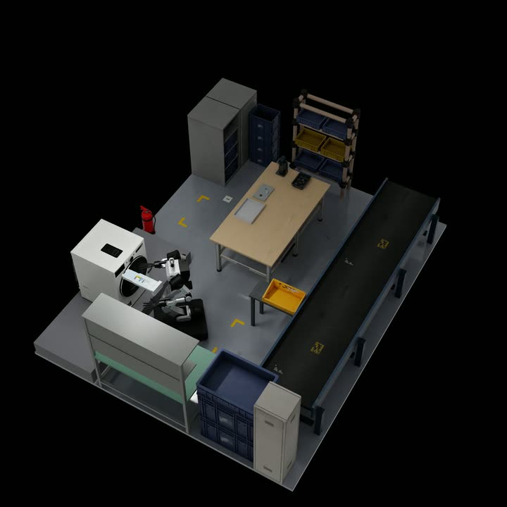

Robot Learning, November 2026
사람 영상에서 배운 동작을 로봇 손으로 옮기고, 정밀 조작을 시험하고, 반복 작업에서 실패가 어떻게 누적되는지 측정한다. 11월에 공개된 네 프로젝트는 이 과정의 서로 다른 부분을 다룬다.
NVIDIA GR00T 2
World-action model · 2026년 11월
미래 영상과 행동을 함께 학습한다
GR00T 2는 최근 카메라 영상, 자연어 지시, 로봇 상태를 받아 다음 영상과 행동 청크를 함께 예측한다. 백서 §2에 따르면, Cosmos-Predict2.5-2B 기반의 단일 diffusion transformer가 영상·상태·행동 토큰을 처리한다. 동결된 Wan 2.1 VAE가 카메라별 영상을 압축하고, Cosmos-Reason1이 인코딩한 지시는 교차 어텐션으로 전달된다. 로봇별 작은 MLP가 상태와 행동을 공통 모델의 표현 공간에 맞추고 예측을 각 로봇의 제어 명령으로 되돌린다.
학습에는 영상과 행동에 각각 flow matching 손실을 사용한다. 유효한 행동 주석이 있는 구간에서만 행동 손실을 적용하므로, 모터 명령이 없는 영상도 시각적 변화의 학습에 기여한다. 추론에서는 행동 토큰이 생성 중인 미래 영상 토큰을 참조한다. 로봇이 행동 청크를 실행하는 동안 다음 청크를 계산하고, 새 관측으로 반복한다. 예측 영상은 학습된 결과의 추정치이므로 접촉력이나 충돌 여부의 검증은 별도로 필요하다.
사람의 시범과 로봇의 제어 데이터를 연결한다
NVIDIA가 공개한 사전학습 데이터 규모는 1인칭 사람 영상 402,730시간, 휴대형 UMI 그리퍼 시범 10,184시간, 로봇 원격조작 23,500시간이다. 사람 영상은 물체와 상호작용의 범위를 넓히고, UMI와 DexUMI는 그리퍼나 손의 움직임을 더 직접적으로 기록하며, 원격조작은 실제 하드웨어의 행동 공간을 제공한다. 교차 전이 실험에서는 목표 로봇이 해당 작업의 시범을 보지 않아도 작업과 무관한 조작 데이터로 자기 몸의 움직임을 학습한 경우가 있다.
백서의 사람 영상 규모 실험은 Dexter 72개 과제를 대상으로 했다. 사람 영상의 사용량을 늘렸을 때 실제 로봇의 평균 과제 진행도는 약 50%에서 70%로 높아졌다. 진행도는 중간 단계 달성도까지 반영하므로 아래의 완주 성공률과 구분해야 한다. NVIDIA 프로젝트 및 공식 데모
실험 결과와 해석
- 목표 로봇에서 미시연 과제 50개. Dexter의 시행당 성공률은 제로샷 40%, 시범 1회 71%, 시범 5회 95%였다. 제로샷에서 40개 과제를 한 번 이상 완료했다는 수치의 분모는 과제 수다. 5회 시범 조건은 과제별 3분 미만의 로봇 데이터로 rank-32 LoRA를 적용했으며 RTX 5090 한 장에서 약 30분이 걸렸다.
- 교차 전이. 사람만 시범을 보인 여과지 설치는 Dexter에서 65%, 휴대형 UMI로 시범을 보인 장난감 트럭 조립은 YAM에서 60%였다. 두 실험은 손 구조와 작업이 다르므로 전이 방식의 직접 비교로 읽기 어렵다.
- 장시간 조립과 전신 제어. YAM의 장난감 조립 결과(장난감별 100회 중 97회 이상 완료)는 추론 모델의 단계 관리와 복구가 결합된 시스템 결과다. Turbo의 Unitree G1 온보드 예측 124ms는 Jetson Thor에서의 청크 예측 지연이며 관절 제어 주기를 뜻하지 않는다. 백서 Table 1에서는 Turbo가 Dexter 정밀 과제에서 68.6%에서 34.3%로 떨어진 비교도 보고했다.
재현 시에는 카메라·행동 형식과 적응 데이터 분량을 고정하고, 사전학습 효과, LoRA 효과, 상위 추론의 복구 효과를 따로 측정하는 편이 해석하기 쉽다. 11월 13일 확인 기준 NVIDIA는 코드 공개를 12월로 예고했다. 공식 백서 §2–4, Appendix A
HolidayFactory 1.0
산업용 시뮬레이션·평가 프레임워크 · 2026년 11월 9일 프리프린트
반복 작업에서 장면 상태를 유지한다
컨베이어에 부품 하나를 잘못 놓으면 다음 부품의 진입 조건도 바뀐다. HolidayFactory는 공정 로직과 장면 변형을 정의하는 scenario에 작업의 시작·완료·실패 조건을 정의하는 evaluation을 결합해 world를 구성한다. 정책이 관측에 따라 행동하면 시뮬레이터가 상태를 갱신하고, 작업이 끝나도 다음 작업은 그 상태에서 이어진다.
물리, 장면 생성, 평가의 세 구성요소
- Holiday-Sim. Newton의 SDF 기반 hydroelastic 접촉을 확장해 접촉 면적에 걸친 압력과 마찰을 다루고, 반암시적 primal-dual solver로 결합된 접촉을 푼다. FRIDAY 손에는 유압으로 닫히고 스프링으로 열리는 구동, 전류·온도 등을 추적하는 액추에이터, 접촉 패치로부터 계산한 자기식 촉각 관측이 포함된다. 같은 힘으로 눌러도 접촉 위치와 면적에 따라 다른 촉각 신호를 낼 수 있다.
- Agentic world construction. 작업 요구에서 에셋과 배치 제약을 도출한다. 에셋 생성에는 메시와 코드 기반 경로가 있고, 형상·충돌체·관절·상호작용을 확인해 실패를 수정에 반영한다. 생성된 평가 규칙은 사람의 확인을 거친 뒤 실행 가능한 검사로 변환한다. 예를 들어 검수 지점의 공간 영역이 너무 크면 물체를 운반하다 잠깐 다시 들어왔을 때 새 작업이 시작된 것으로 잘못 기록될 수 있다.
- 24/7-Bench. 컨베이어 적재, 플로랙 적재, 카트 밀기, 지그 적재, 프레스 보조, 밸브 조작, 바코드 분류의 7개 과제에서 장면을 작업 사이에 초기화하지 않는다. 완료·실패·미완료 건수, 처리량, 지연, 모터 에너지를 기록해 개별 성공과 공정 운영을 함께 평가한다.
입증한 범위와 남은 검증
프리프린트는 6개 과제에서 영역 검사 185개, 시작 상태 검사 20개, 스크립트 궤적 32개가 수정 후 예상 결과와 일치했다고 보고한다. 이 수치의 대상은 평가 규칙이다. 지속 실행에서 학습 정책 간 순위를 비교한 결과나, 시뮬레이터에서 얻은 순위가 실제 공정에서 재현되는지에 대한 검증은 보고하지 않았다. 생성된 장면의 유효성 검사도 전체 작업 공간의 물리적 정확도를 보증하지 않는다.
독립적으로 재현한다면 작업별 시행을 독립 표본으로 간주하기보다, 초기 조건과 운영 시간을 통제한 전체 실행을 반복해 처리량과 실패 후 회복 시간을 비교할 수 있다. 하나의 오배치가 뒤의 여러 작업에 영향을 주기 때문이다. HolidayFactory 프리프린트 §3–6, Appendix F · 공식 개요 그림 · Holiday Robotics의 시뮬레이터 해설

RLWRLD DexBench
산업 조작 분류 체계 및 시뮬레이션 벤치마크 · 2026년 11월 9일 공개

어떤 조건에서 무엇이 어려운지 정의한다
분류 체계에는 16개 Action과 78개 Skill이 있다. Action은 삽입처럼 목적이 하나인 조작, Skill은 제한된 공차처럼 조작을 어렵게 만드는 병목까지 포함한 능력, World는 여러 Skill이 연결되는 산업 작업이다. OSC(Object State Complexity)는 기하, 힘, 접촉 모드, 관측 불완전성, 변형, 시간·동역학의 여섯 축으로 조건을 설명한다. Dexterity Regimes는 그 조건을 해결하는 능력을 파지 다양성, 공간 정밀도, 시간 정밀도, 접촉 정밀도, 문맥 이해로 표현한다. DexBench 분류 체계 · OSC 축 · Dexterity Regimes
같은 시작 상태에서 일반화를 시험한다
공개 벤치마크의 실행 범위는 IsaacLab-Arena와 Newton 기반의 4개 환경, 15개 과제다. 소매 3개, 물류 4개, 제조 5개, 호텔 식음료 3개로 구성된다. 각 정책은 같은 고정 초기 상태를 재생한다. GA-O는 미학습 물체, GA-S는 학습 범위를 벗어난 배치, GA-P는 학습 범위를 벗어난 물리 조건을 시험한다. 조합 셀도 있지만 과제마다 적용되는 축은 다르다. 공개 프로토콜의 v1은 셀당 60회, v1-plus는 120회다.
예를 들어 커넥터 삽입(m2)은 GA-S에서 플러그와 로봇 베이스의 배치 범위를 바꾼다. 성공하려면 삽입축 방향 1mm, 횡방향 0.5mm, 기울기 2° 이내를 2초 유지해야 한다. 그리퍼가 커넥터를 놓았는지는 이 과제의 성공 조건에 포함되지 않는다. 액체 따르기(h2)는 잔에 90mL 이상이 들어가고 흘린 양이 5mL 미만인 상태를 5초 유지해야 한다. 평가기는 셀별 성공률과 95% 베이지안 구간을 제공하고, 과제별로 셀 성공률의 단순 평균을 보고한다. 공식 평가 프로토콜 §1–2, §9–10
결과를 재현할 때 확인할 것
공개 저장소는 평가 실행과 OpenXR 원격조작을 지원하며, LeRobot v3.0 시범 데이터는 별도로 제공된다. 학습·데이터 생성 스크립트는 공개 릴리스에 포함되지 않는다. 결과를 비교할 때는 모델명 외에도 체크포인트, 관측 설정, 평가 버전, 정책 주기, 허용 시간, 사용 셀을 함께 기록해야 한다. 고정 리셋은 조건별 비교를 돕지만 실패가 다음 작업으로 이어지는 현상은 별도의 지속 실행으로 확인해야 한다. 코드 및 설치 안내 · 시범 데이터 · 과제 영상 및 리더보드
Gemini Robotics 2.5
Vision-language-action 모델 · 2026년 11월 10일 공개
작업 흐름 추론과 물리 행동을 연결한다
DeepMind의 자동차 키팅 실증에서 Gemini Robotics ER은 작업의 진행 상태를 추적했고, Gemini Robotics 2.5 VLA는 관측과 지시에 따라 Apollo 2의 손과 팔을 움직였다. 로봇은 벌크 상자에서 금속 브래킷을 집고 차량 조립 순서에 맞춰 트레이에 놓았다. Apollo 2는 22자유도의 SharpaWave 손을 사용했고, 공식 발표는 평행 그리퍼를 장착한 Franka Duo도 지원 대상으로 소개했다.
Gemini 4 Argon은 연구 과정에도 사용됐다. DeepMind는 실제 카메라 장면으로 디지털 트윈과 다양한 시뮬레이션 시행을 구성하고, 실제 시범과 함께 활용했다고 설명한다. 실패 영상에서 원인 후보를 찾은 뒤 시뮬레이션과 실기에서 검증하는 데도 썼다. 2.5 발표 자료에서는 정책의 파라미터 규모, 손실 함수, 데이터 혼합 비율을 확인할 수 없어, GR00T 2의 백서와 같은 수준으로 내부 학습 절차를 재구성하기는 어렵다. Argon의 로보틱스 연구 워크플로
실험과 공장 실증의 분모가 다르다
- 조작 폭. DeepMind는 집게로 음식 담기, 리본 다루기, 피펫 조작 등 약 200개 과제에서 평가했다. 과제 유형에 따라 기존 기준 대비 성공률이 상대적으로 30~100% 높고 완료가 20~30% 빨랐다고 보고했다. 공개 차트의 예로, 솔로 쓰레기를 받이에 모으는 과제는 0%에서 52%로 올랐다.
- 공장 실증. 헝가리 케치케메트와 독일 진델핑겐의 Mercedes-Benz 생산 라인에서 자동차 부품 키팅 성공률 96%를 보고했다. 이는 해당 공정에서 ER과 VLA를 함께 사용한 PoC 결과다. 발표 자료에서 총 시행 수, 교대 운영 시간, 작업자 개입 빈도는 확인되지 않는다.
- 안전 관련 지표. 추론 시 위험 회피 지침을 적용했을 때 안전한 작업 완료 지표가 장애물 조건에서 33%, 사람 근접 조건에서 43% 개선됐다고 보고했다. ASIMOV-Jailbreak의 99.5%는 Gemini 4 Argon이 위험을 숨긴 지시를 거부한 비율이며, 2.5 VLA의 물리 충돌 회피율과는 다른 지표다.
실증을 다른 공정에 옮겨 읽을 때는 성공률과 함께 처리량, 작업자 개입, 품질 편차, 안전 정지를 살펴야 한다. 11월 13일 확인 기준 2.5는 로보틱스 파트너에 제공 중이며, 발표에서 공개 체크포인트는 확인되지 않았다. DeepMind 공식 발표, 평가 차트 및 공장 실증 영상
네 프로젝트의 결과를 비교하는 법
- GR00T 2
- 사람과 다른 로봇의 데이터로 배운 기술을 목표 로봇에서 얼마나 적은 시범으로 수행하는가. 목표 로봇, 과제별 시범 수, 상위 추론 사용 여부를 맞춰야 한다.
- HolidayFactory 1.0
- 장면 상태가 이어질 때 오류가 공정에 어떤 영향을 주는가. 작업 하나의 성공률과 별개로 완료 건수, 회복 시간, 에너지를 본다.
- DexBench
- 고정 초기 상태를 공유할 때 어느 일반화 조건에서 정책이 실패하는가. 물체·공간·물리 셀의 성적과 과제별 성공 정의가 비교 단위다.
- Gemini Robotics 2.5
- 정밀 조작의 폭과 실제 키팅이 어느 정도 개선되는가. 통제된 조작 평가, 공장 PoC, 지시 거부 실험은 각각 다른 결과를 측정한다.
예시 실험 설계 — 커넥터 삽입
먼저 같은 로봇과 카메라를 쓰고 위치·각도 변화의 범위를 고정해 삽입 성공률을 측정한다. 다음으로 커넥터 한 개가 잘못 놓인 상태에서 장면을 리셋하지 않고 작업을 이어가, 처리량과 복구에 걸린 시간을 기록한다. 마지막으로 실제 지그에서 삽입력과 오삽입을 계측해 시뮬레이션 결과와 맞춰 본다. 작업을 잘 이해한 경우, 접촉 정밀도가 부족한 경우, 한 번의 실패가 다음 작업까지 방해한 경우를 이 세 결과로 구분할 수 있다.